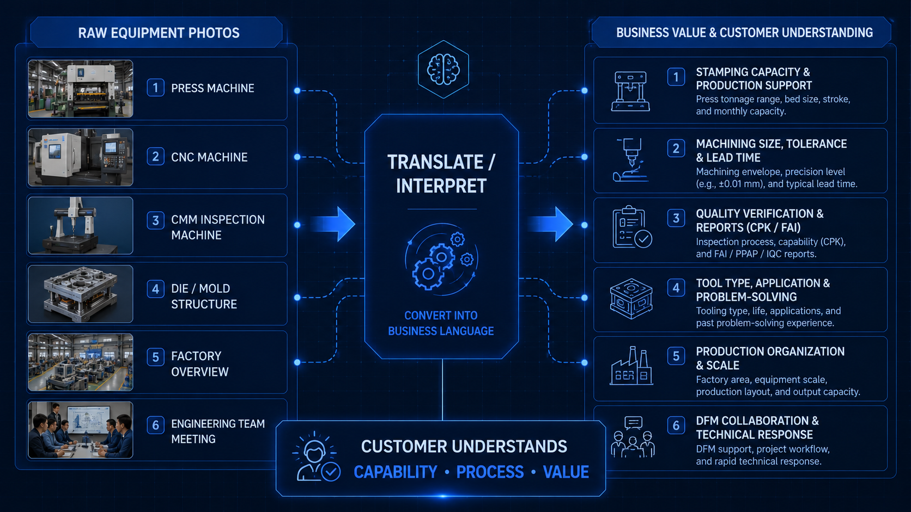

打开很多国内中小制造企业的英文官网，你经常会看到一种高度趋同的页面布局：一个名为“Equipment”或“Facilities”的菜单下，堆满了冲床、CNC、注塑机、三坐标测量仪（CMM）甚至厂区大门的静态照片。
在很多制造企业老板和外贸负责人的认知里，网站的本质功能就是“秀肌肉”，而最能代表实力的就是那些花重金买回来的设备。然而，这种把企业官网当成“电子相册”的做法，往往导致高昂的流量无法转化为高质量的询盘。制造业官网不能只是照片的堆叠，而应该把这些图片转化为清晰的业务逻辑。
1. 为什么很多制造业官网看起来像“设备相册”？
之所以出现大量“相册式”网站，本质上是供需双方认知错位的产物：
- 内部视角的局限：老板和工厂团队每天身处车间，天然认为“拥有先进的机器”等同于“具备强大的交付能力”。
- 建站公司不懂制造业：大多数传统的网站建设服务商并不了解工业逻辑。他们拿到一堆现场照片后，只能机械地排版上去，无法提炼照片背后的商业价值。
- 缺乏对客户决策逻辑的理解：很多企业误以为“有设备图 = 有实力”，殊不知海外采购和工程师看到的只是一堆毫无关联的信息碎片。
2. 设备照片本身能证明什么，不能证明什么？
我们并不是说不能放设备照片。恰恰相反，真实的车间照片是建立初步信任的基础，但我们必须清楚它的边界。
设备照片可以证明：
- 你的基础产能规模（你不是个皮包公司或单纯的贸易商）。
- 你的现场是真实存在的。
- 你具备一定程度的硬件加工或检测条件（比如有一台海克斯康的三坐标）。
但设备照片不能证明：
- 你对特殊工艺和材料特性的理解能力。
- 你对跨国项目的管理与跟进能力。
- 你的品质控制逻辑和交付稳定性。
- 你是否理解客户所在行业的合规要求或隐性痛点。
- 你之前是否真正做过类似公差要求、类似复杂度的成功项目。
3. 客户真正关心的不是“你有什么机器”，而是“你能不能解决我的问题”
海外买家或工程师在浏览你的网站时，脑子里带的往往是一个具体的项目需求（例如：寻找一个能稳定量产高精度铝合金汽车压铸件的供应商）。
他想看的绝对不只是一台冷冰冰的压铸机照片。他想知道的是：这台设备能加工的最大尺寸是多少？能控制的公差精度在什么范围？它主要服务于什么项目类型？这台设备背后的应用场景是什么？
最终，客户更关心的是企业是否理解他的产品、他的生命周期、他面临的质量风险，以及在项目初期他需要付出的沟通成本。一台高端机床买来只要花钱就行，但把高端机床用好、稳定产出良品，考验的是整个工厂的系统性能力。
4. 如何把设备照片转化成网站内容逻辑？
要改变这种现状，最有效的办法是在设计网页时，强制性地为每一张照片配上业务维度的“翻译”。
| 原始内容（单纯展示照片） | 应该转化为的业务逻辑（内容呈现） |
|---|---|
| 一张冲床照片 | 明确冲压能力、吨位覆盖范围、适用产品类型、前期试模能力、以及后期大批量的量产支持能力。 |
| 一张 CNC 照片 | 阐述加工包络尺寸、精度控制水平（如 ±0.01mm）、是侧重于模具零件加工还是产品批量加工，以及交期支持力度。 |
| 一张 CMM 检测仪照片 | 展示检测流程图、关键尺寸验证逻辑、能出具什么样的中英文品质报告（如 CPK、FAI），以及如何配合客户的终端验收。 |
| 一张模具结构照片 | 标注模具类型、产品应用领域、解决了哪些常见的结构难点（如倒扣、深腔抽芯），以及过往的实战项目经验。 |
| 一张厂房大全景照片 | 引申出企业的生产组织能力、车间 5S 或精益现场管理水平，以及能够承接多大规模的年产量或项目体量。 |
| 一张工程团队开会照片 | 说明团队的沟通机制、项目协作流程、DFM（可制造性设计）分析能力以及售前售后的技术响应速度。 |

5. 制造业官网应该如何讲“能力”？
官网展示“能力（Capabilities）”不是单纯堆叠机器参数，而是要构建一套完整的信任闭环。当你介绍一项制造能力时，必须尽可能讲清楚以下几点：
- 产品范围：你能做什么材质、什么结构、多大体积的产品？
- 工艺范围：包含哪些前处理、主加工和后处理工艺？
- 质量控制节点：从进料到出货，你在哪些关键工序设了卡？
- 交付流程：客户下发图纸后，你会如何开展 DFM 分析、打样和量产排期？
- 风险控制方式：面对常见的工艺缺陷，你有什么预案或预防措施？
6. 中小制造企业做官网时的现实建议
对绝大多数准备进行网站升级的中小制造企业而言，少走弯路的核心原则是：
- 不要一上来追求炫酷的视觉特效：先把客户最关心的问题、痛点和你们的解决方案讲清楚，清晰的结构永远大于华丽的动画。
- 图文相符并具解释性：网站上的每张设备图、产品图旁边，必须配有一两句话的业务价值解释。
- 回答“So What”：每个能力页面写完后问问自己：“这对我的客户有什么价值？”如果回答不出来，这段内容就是废话。
- 全链路配合：高质量的图片、专业的文案解释、真实的案例分析、针对性的 FAQ 以及清晰的召唤行动（CTA）按钮，必须互相配合，形成漏斗。网站的内容要服务于询盘转化，而不是单纯展示公司的存在感。
7. NDA 和客户机密问题可以如何处理？
很多老板抗拒在网站上讲具体的案例或工艺，借口通常是：“我们签了保密协议（NDA），不能泄露客户的产品图纸。”
这是一个极大的误区。制造业企业不需要把客户图纸、核心项目细节、产品关键尺寸全部公开。 官网展示的重点不是泄露敏感数据，而是展示你的综合解决能力和经验方法论。
你可以通过打码模糊客户的品牌 Logo、隐藏关键的工程公差、只使用零件局部特写图片、将案例抽象为特定的工艺类别，并重点强调“当时遇到了什么类型的制造难题”以及“我们是如何通过改进模具结构/优化刀路解决的”。这样既能严格保护 NDA，又能让潜在客户真切地感受到你们的专业深度。
结论：
制造业官网不是把厂房设备的照片拷贝上去就结束了。设备照片充其量只是一份证据，而真正有商业价值的，是把这些证据组织成客户能够理解、能够信任的交付逻辑。一个出色的制造业官网，应该让专业的买家和工程师在访问的几分钟内明确明白：这家工厂主要是做什么的、最擅长什么、适合承接什么类型的项目、以及为什么他们值得我发一封邮件进一步沟通。
永远记住：图片只负责证明你们真实存在，而内容逻辑负责解释你们的专业价值。